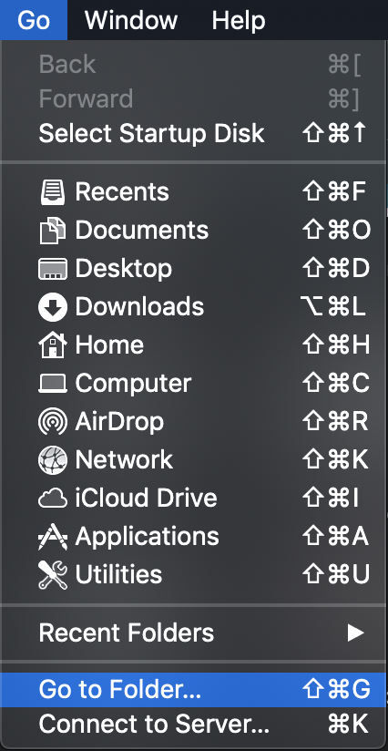
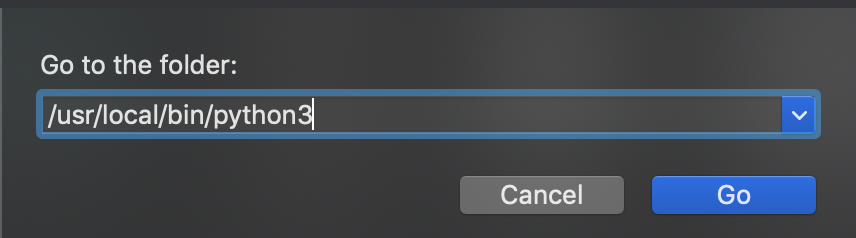

Firstly, your going to want to install Homebrew, a package manager (skip this step if you already have it), by opening up a new terminal window and typing in:
Secondly, if you have already attempted to install Python before your going to want to uninstall it. Assuming that you installed Python 3 your going to want to type in:
which python3
That should output the path at which Python is, here is what I got (it is fine if you do not have the same path):
/usr/local/bin/python3
Navigate to that folder in Finder and delete the folder python3(Go > Go to Folder) Here are some images to help you:


Go to your aplications folder as well and delete the Python folder. Then, empty your trash.Use Homebrew to then check if Python is still installed. If it is, then check the version. If the version is Python 2.7 something, you can ignore it as it is the system version. Otherwise checkif the above steps were completed correctly.
brew list | grep python
brew info python
That should output the path at which Python is, here is what I got (it is fine if you do not have the same path):
/usr/local/bin/python3
The source of some of the problems you have with Python is probably because of the system Python. However yoou do not want the Mac OS X 'default Python' to be 'python3.' You want to never care about default Python. To do this we are going to use a package called pyenv which will manage your Python enviroments. We will install it using Homebrew and then add the initilaizer to the startup code and reload it.
brew install pyenv
echo 'eval "$(pyenv init -)"' >> ~/.bash_profile
source ~/.bash_profile
After that you are going to want to install Python 3.8.0 (the latest version as of this writing), properly this time using pyenv
pyenv install 3.8.0
If you get some error saying that you are missing zlib. Follow these instructions and then return:
Now that we’ve installed Python 3.8.0 let’s take a look at all the installed versions available on our system:
pyenv versions
You should see system and 3.8.0After that your going to want to check the Global Python to see if it is the version you just installed. If it isn't then set it and then check it again.To check:
pyenv global
To set:
pyenv global 3.8.0
Restart your terminal window afterwards by quitting and then reopening. Then check if the python version has updated in terminal:
python --version
You can then install PIL (pillow in python3) using pip, update afterwards if it prompts you to.
pip install pillow
Thats it! You should now have python and PIL working properly using any text editor such as jGrasp. If you are using an more-advance IDE like pyCharm or IntelliJ you will have to set the version it uses.